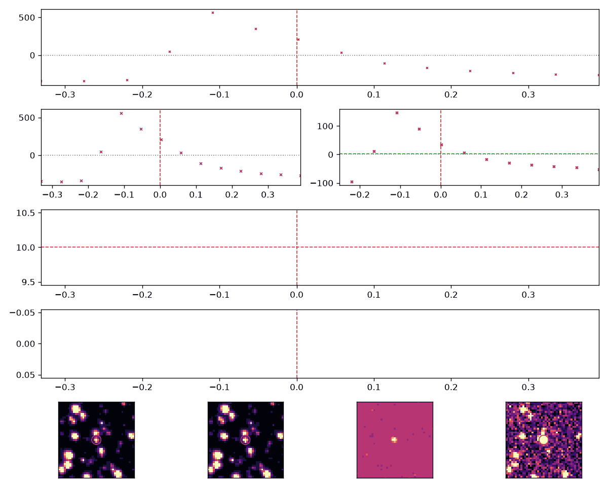

The localization is no larger than one TESS pixel, so the light curve below is measured at the catalog position whether or not the blind search found a candidate. It is not vetted like a candidate: slow drifts are usually scattered-light systematics, and a field star inside the aperture leaves residuals. An offset that starts before the trigger, or persists unchanged for days, is not afterglow.

Candidate
EP261114a_spoc_position_cam1_ccd4
Refined RA (ICRS, deg)
68.3434748
Refined Dec (ICRS, deg)
-3.5039940
Position refinement
Gaussian centroid of strongest post-trigger difference image
Refinement offset from discovery position (arcsec)
1.049
Discovery RA (ICRS, deg)
68.3436000
Discovery Dec (ICRS, deg)
-3.5042500
Event
EP261114a
Catalog
ep
Data product
TICA_FFI
Detector
Sector 110 Cam 1 CCD 4
Status
FLAG
Flags
running_rms_noise, no_post_detection
Detection class
none
Detection count (cadence overlaps 0–1 hr)
0
Peak cadence straddles trigger
no
Running RMS high anywhere
no
Gaussian S/N
82.93
Gaussian sigma
0.6639
Gaussian center offset
0.171
Panels
Flux from 6 hours before through 12 hours after the trigger; event-centered flux and trigger-centered signal-to-noise zooms; running background RMS over the 18-hour context interval; event-centered TESS magnitude for positive points at or above 3 sigma; reference, first post-trigger, strongest post-trigger difference, and standard-deviation cutouts. The red dashed line is the trigger, green stars are at least 3-sigma detections in the first hour, and red crosses are rejected cadences.